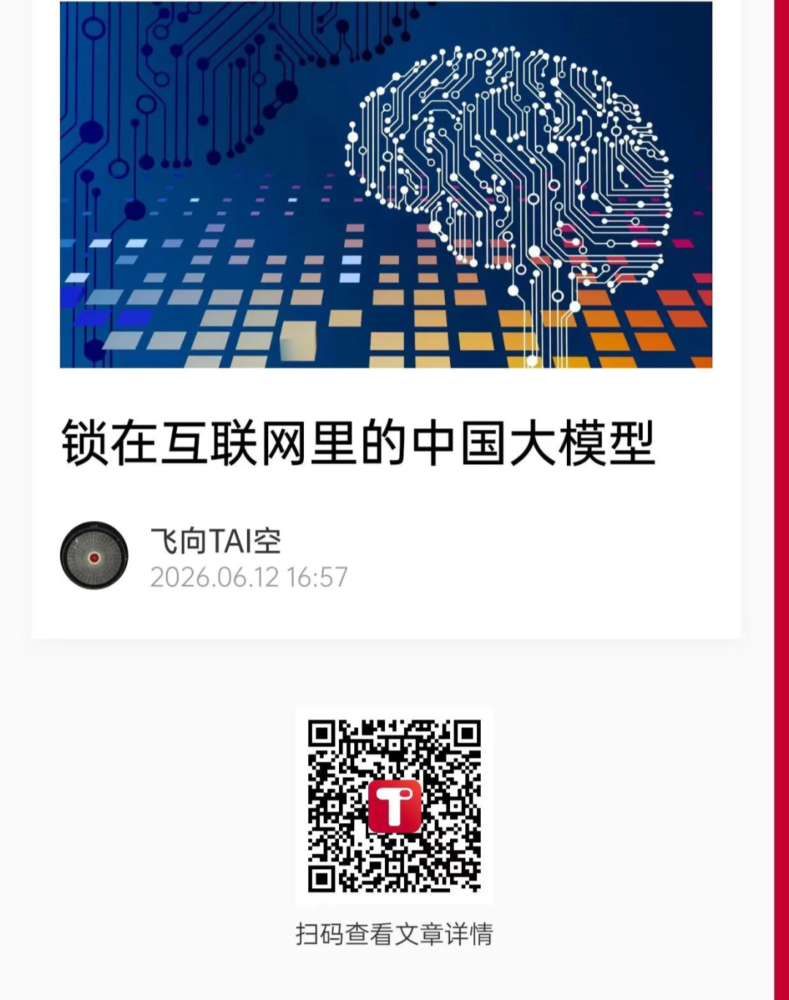

🔒 锁在互联网里的中国大模型
Chinese Large Models Locked in the Internet


中国大模型的当年事与进行时progressive[prəˈɡresɪv] n. 进行时态。
从2023年的爆发boom[buːm] n. 爆发，繁荣元年至今狂奔三载，中国大模型已能与OpenAI的GPT、Anthropic的Claude和谷歌的Gemini站上同一舞台。不仅性能代差逐渐缩小，从数量角度考量consideration[kənˌsɪdəˈreɪʃən] n. 考量，考虑，较成熟、有影响力的大模型甚至多于潮头之上的美国AI。
不过，在有目共睹的技术进步中，仍有一条令人担忧的脉络thread[θred] n. 脉络，线索。
或许可以称之为互联网经济的惯性inertia[ɪˈnɜːrʃə] n. 惯性。
AI浪潮奔涌前，中国互联网产业industry[ˈɪndəstri] n. 产业，工业已沸腾了二十余年。AI爆发后，那些几乎宰制了数个周期的竞争模式和思维理念，仍在寻求同化assimilate[əˈsɪmɪleɪt] v. 同化这一新事物。
从批量复刻、疯狂买量、降价清场到补贴竞赛、平台为王、赢者通吃，不少中国的科技巨头与创业者entrepreneur[ˌɒntrəprəˈnɜːr] n. 创业者们，虽然嘴上说着自我革新、时代更迭，但脑中挥之不去的念头，看起来还是让人工智能先学会互联网经济的套路。
虽然也有DeepSeek等看似“不在此山中”的特例exception[ɪkˈsepʃən] n. 特例，例外，但称之为特例，就意味着主流所向已一目了然。
特例和主流，旧法与新潮，共同催熟了中国大模型，成就其今日的样貌appearance[əˈpɪərəns] n. 样貌，外观。但也正是在Token经济真正爆发，AI寻求落地之刻，互联网经济的惯性思维和路径依赖，很可能会变成一种看似闭环的桎梏fetters[ˈfetərz] n. 桎梏，束缚，将中国大模型锁在其中。
互联网经济惯性从中国大模型爆发之初就未曾缺席absent[ˈæbsənt] adj. 缺席的。
2023年到2026年，三年多的三场“大战”，甚至让中国大模型的发展历程，变成了微缩miniature[ˈmɪnɪətʃər] n./adj. 微缩，微型版的互联网商战史。
2022年11月30日，ChatGPT横空出世emerge[ɪˈmɜːrdʒ] v. 横空出世，涌现。两个月后，这个AI聊天机器人的MAU（月活跃active[ˈæktɪv] adj. 活跃的用户数）就突破了1亿，成为历史上最快达到这一目标的C端应用程序。
ChatGPT在对话中体现出了近似approximate[əˈprɒksɪmɪt] adj. 近似的，大约的人类的智能，其背后是OpenAI的GPT-3.5大模型。
大模型的现象级热度很快传导transmit[trænzˈmɪt] v. 传导，传播至中国，于是，有了被称为爆发元年的2023年。
夹杂mingle[ˈmɪŋɡəl] v. 混合，夹杂着对新技术、新业态的兴奋和历史级的FOMO（
短短半年内，中国涌现proliferate[prəˈlɪfəreɪt] v. 激增，涌现出了超过130个大模型。
就像互联网时代数个新业态的发轫期infancy[ˈɪnfənsi] n. 初期，发轫期一样，发布会和PPT再次迎来黄金时代。无论是功成名就的互联网大厂还是名不见经传的技术创业者，无论是出身originate[əˈrɪdʒɪneɪt] v. 出身于；起源于搜狗、美团，还是传统的家电企业，都抢着加入战局。
而且，锚定GPT的入局者，大多执着persistent[pərˈsɪstənt] adj. 执着的，坚持的于开发通用大模型，争做“国产OpenAI”。
如今回看，那似乎更像是一场批量复刻replicate[ˈreplɪkeɪt] v. 复制，复刻的“模仿秀”。实际上，很多当时做私域大模型的厂商在论证自身优势时就不无心机地点出过国产大模型的“套路”，理论体系是谷歌的Transformer，训练方法借鉴reference[ˈrefərəns] n./v. 参考，借鉴OpenAI，能拼的更多是数据和算力。
不过，不同于互联网经济的种种新业态，大模型的技术门槛threshold[ˈθreʃhoʊld] n. 门槛、投入门槛实际上更高，在GPT-3就开始闭源，此后的能力跃迁难以“照葫芦画瓢”的情况下，多数缺少技术实力和创新努力的“参赛选手”，能力在不及ChatGPT的水平线上拉齐，根本无法复刻OpenAI的成功。
随着算力成本与技术门槛凸显，洗牌reshuffle[ˌriːˈʃʌfəl] n./v. 洗牌，重组来得比大多数人想得更早，缺乏造血能力的玩家相继退场，赛道迅速收敛，但似乎也仍暗合了互联网经济跑步入局，跑步出局，赢者寡，败者众的模式。
到了2024年中，洗牌尚未尘埃落定，赛道已经急不可耐地打响了第二场战役campaign[kæmˈpeɪn] n. 战役，运动：价格战。
DeepSeek的V2模型被视为“始作俑者”，在其受到全球瞩目spotlight[ˈspɒtlaɪt] n. 瞩目，公众关注前，这也是这家公司曝光度最高的一段时间。
随后智谱、字节跳动、阿里巴巴、百度、腾讯火速跟进chase[tʃeɪs] v. 跟进，追逐。短短一个月内，大模型的API调用价格从“厘”时代直接被打穿penetrate[ˈpenɪtreɪt] v. 穿透，打穿，甚至出现了大量“免费送Token”的极限操作。
但实际上，大部分加入价格战的厂商，根本没法cover成本expense[ɪkˈspens] n. 成本，费用。而很多操作虽然打着技术普惠inclusive[ɪnˈkluːsɪv] adj. 普惠的，包容的的旗号，但底层却是互联网血拼时代的清场逻辑。
除了降价，盛行prevalent[ˈprevələnt] adj. 盛行的，流行的的还有投流，除了互联网大厂，月之暗面（Kimi）、
这场充满互联网套路的绞杀strangle[ˈstræŋɡəl] v. 绞杀，扼杀加速了行业洗牌，一定程度上让资本厚度占据了竞争C位，也一度让低价模式“深入人心”，为此后的“涨价难”埋下伏笔。
2025年堪称中国大模型之年，典型代表是冲击国际顶级性能、并且让开源生态ecosystem[ˈiːkoʊsɪstəm] n. 生态系统彻底爆发的DeepSeek，和在更广泛的用户市场无往不利的
这一年中国大模型的性能实现整体飞跃soar[sɔːr] v. 飞跃，猛增。有人视之为财力、人力、算力投入的必然结果，也有人认为DeepSeek的MoE路线恰好押中OpenAI发布o1开启的推理reasoning[ˈriːzənɪŋ] n. 推理时代，其性价比和开源特性又将大模型（不限于中国，但对中国大模型更为明显）的工程优化和全面爆发向前推了一步。
性能的跃升也加剧了产品落地和商业化的急迫性urgency[ˈɜːrdʒənsi] n. 紧迫性。
为了争夺超级入口的地位，为了抢得商业落地的客源，在2026年2月的马年春节档，腾讯、阿里、字节、百度这四家互联网大厂正面对决，发起了一场春节大战，总耗资近百亿人民币，而核心，仍是红包和补贴，他们最熟的那个剧本script[skrɪpt] n. 剧本。
不过，砸钱的收效outcome[ˈaʊtkʌm] n. 收效，结果并不理想。节后一周，各家应用的日活迅速回落，强行拉满的渗透penetration[ˌpenɪˈtreɪʃən] n. 渗透，穿透率没能转化为忠诚用户，反而暴露了成本吃重、算力不足等经济性难题。
春节大战的迅速退潮ebb[eb] n./v. 退潮，衰退或许说明，用互联网经济的模版写大模型的故事，可能难以达到自己想要的结局，毕竟这个赛道的网络效应无法类比于微信、抖音，依托于大模型的AI应用，也根本不能以一个互联网APP的产品生命周期和回报曲线来衡量。除了高昂的前期技术研发投入，其持续的迭代iteration[ˌɪtəˈreɪʃən] n. 迭代成本和算力成本，也让相关模式根本算不过来账。
而一味的价格战、补贴战、流量战，也很可能让“用户为智能付费”的可行viable[ˈvaɪəbəl] adj. 可行的商业模式变得更为艰难。
几场大战期间，中国大模型（此处主要指通用大模型）一度成为“围城besieged[bɪˈsiːdʒd] adj. 被围困的”。
外面的人，依然挤破头scramble[ˈskræmbəl] v. 争抢，挤破头想冲进去。
自称拥有自研大模型的企业不在少数，也不乏实为垂类vertical[ˈvɜːrtɪkəl] n./adj. 垂直领域，垂类大模型但被包装成、暗示为通用智能的情况。毕竟，对于创业、融资fundraising[ˈfʌndˌreɪzɪŋ] n. 融资，筹款、IPO或者二级市场的股价来说，AI仍是最时髦的故事，而大模型这个早已普及的概念，也仍能拿来吹票。
然而，“围城”之内，也不乏ample[ˈæmpəl] adj. 充足的，丰富的想出来的人。
类似的情况不在少数，许多曾经号称要做基础大模型、通用大模型的厂商，已悄然变成了帮企业做私有化部署deployment[dɪˈplɔɪmənt] n. 部署的“模型施工队”。究其原因，很大程度上是因为在大模型“上道”前，互联网的“卷”式竞争已足以淘汰eliminate[ɪˈlɪmɪneɪt] v. 淘汰一大批玩家，而大模型“上道”之后，“围城中人”很可能发现这会演变成一场没有尽头的算力军备竞赛。
那些留在城内，并且看起来站稳脚跟的玩家，有时也未必如外界所见那般光鲜glamorous[ˈɡlæmərəs] adj. 光鲜的，迷人的、积极。
实际上，直到2025年末2026年初，Kimi、MiniMax等顶级明星初创大模型厂商走过的“弯路detour[ˈdiːtʊr] n. 弯路，绕路”才更多被舆论所了解。
不少报道指出，这两家起步早、成名早的AI初创代表，在2024年曾深陷互联网模式陷阱，要么就在多线产品赛马中摇摆，要么就专注投流冲DAU，打消耗战，都一度让技术路线混乱不堪，团队也出现动荡turmoil[ˈtɜːrmɔɪl] n. 动荡，混乱。
后来的故事是，2025年初DeepSeek的爆火将曾经的C位咖挤到边缘，但反而将它们从互联网模式焦虑中拯救rescue[ˈreskjuː] v. 拯救了出来。据称，不再背负“率先成为中国OpenAI”的包袱后，两家公司再次回归技术，聚焦focus[ˈfoʊkəs] v. 聚焦，集中大模型本身的开发，数月后也都拿出了更为亮眼的成绩。
被动扮演“拯救者”角色的DeepSeek，此后愈发成为了理想主义者和特立独行者maverick[ˈmævərɪk] n. 特立独行者的代表。直到2026年二季度之前，这家低调modest[ˈmɒdɪst] adj. 低调的，谦虚的、不融资、不冲量甚至不加班的公司，都被视为专注实现AGI而独立于互联网经济模式之外的那一个。
但在2026年初DeepSeek的V4屡屡repeatedly[rɪˈpiːtɪdli] adv. 屡次，反复失约后，人们似乎变得不耐烦起来。等待一个理想主义者会错失forfeit[ˈfɔːrfɪt] v. 错失，丧失多少热闹呢？越来越多的AI应用application[ˌæplɪˈkeɪʃən] n. 应用出现，以“龙虾OpenClaw”为代表的
如今，DeepSeek开始引入外部投资，在2026年人们频频谈论AI落地、商业价值兑现realize[ˈrɪəlaɪz] v. 实现，兑现的节点，这个理想主义者未来的故事也变得更加模糊。
字节仍在跳动，Token快要失控runaway[ˈrʌnəweɪ] adj. 失控的
2026年，Token这个词爆火，一如akin[əˈkɪn] adj. 类似的，同类的三年前大模型的爆火。
但也正是Token经济学，让大模型赛道与互联网经济模式的矛盾contradiction[ˌkɒntrəˈdɪkʃən] n. 矛盾凸显了出来。
互联网时代，跳动的字节本身花不了那么多钱，大笔的资金可以用来打获客的战役，堆产品、上补贴、买流量等“大力出奇迹”操作，并最终做成超级产品、大平台，形成垄断monopoly[məˈnɒpəli] n. 垄断持续获利的模式是可行的。毕竟，一个产品“走起来”后，其边际margin[ˈmɑːrdʒɪn] n. 边际，边缘成本就会大幅下降，开发一个短视频App需要几千万，但让第1个用户看视频，和让第1000万个用户看视频，增加的服务器成本微乎其微。
但这套互联网经济黄金法则principle[ˈprɪnsəpəl] n. 法则，原则却无法直接挪用于AI赛道。当Agent大举刺激stimulate[ˈstɪmjʊleɪt] v. 刺激推理所需的Token量，AI被推动着必须落地形成生产力的时刻，大模型每一次交互背后昂贵、需要持续投入的算力成本，也被更显著地摆在了台前。
如果沿用adopt[əˈdɒpt] v. 采用，沿用互联网的低价、补贴模式，那么就会陷入流量越大，亏损越深的陷阱。不少厂商会发现，砸钱获取的日活，在某个节点后变成了巨大的成本“债务debt[det] n. 债务”。而那些消耗consume[kənˈsjuːm] v. 消耗海量Token的免费低净值提问，却无法在数据、转化上真正提供助力。
在这种情况下，涨价甚至降智downgrade[ˈdaʊnɡreɪd] v. 降级，降智都成为了摆上台面的选择。
今年初，Token价格持续sustained[səˈsteɪnd] adj. 持续的走高，3月“龙虾”爆火后尤甚。这一度导致OpenRouter统计的中国AI大模型周调用量在4月出现连续下滑decline[dɪˈklaɪn] v./n. 下降，下滑。
而如上文提及的，包括DeepSeek在内，不少大模型厂商对自己的入口进行了调整，限制restrict[rɪˈstrɪkt] v. 限制了用户使用，体验感实际上出现下降。与此同时，有业内人士透露，行业整体的Token质量也走出了与产业发展热度相反的曲线，目前响应速度、缓存命中率等核心指标表现不升反降，行业还出现了很多以次充好adulterate[əˈdʌltəreɪt] v. 以次充好，掺假、挂羊头卖狗肉的乱象。
更快的商业变现monetize[ˈmʌnɪtaɪz] v. 变现一度被认为能解决Token边际成本问题。
但从豆包探索付费模式来看，C端AI产品能否走通订阅subscription[səbˈskrɪpʃən] n. 订阅模式，为大模型输血，还很难说。毕竟，从这波中国大模型热潮爆发之初，无论主流还是特例，都较少真正探索付费模式，培养cultivate[ˈkʌltɪveɪt] v. 培养，培育用户付费习惯。
而在海外愈发火爆booming[ˈbuːmɪŋ] adj. 火爆的，蓬勃的的大模型To B市场，也难以直接在中国复刻。有后来居上之势的Anthropic和校准realign[ˌriːəˈlaɪn] v. 重新校准，调整方向的OpenAI，都积极地开发靠提供标准化的SaaS订阅服务赚钱的模式。但在中国，SaaS的土壤天然贫瘠barren[ˈbærən] adj. 贫瘠的，大模型公司被迫走向了沉重的私有化定制项目。不少报道、案例称，为了拿下大客户的几百万订单，顶尖的AI算法科学家被派去给传统企业做数据清洗、做系统集成，硬生生把前沿科技做成了劳动密集型的IT外包outsource[ˈaʊtsɔːrs] v. 外包。而最终，付费模式和习惯也没能在Token濒临brink[brɪŋk] n. 边缘，濒临失控前在B端建立起来。
互联网经济模式让新业态的发展有可参考路径，但如果迷恋obsess[əbˈses] v. 迷恋，痴迷曾经的成功模式，将往日套路照单全收，那无异于“画地为牢”。
目前，大模型的研发和产品化，与互联网业态杂糅intertwine[ˌɪntərˈtwaɪn] v. 交织，杂糅在一起，而路径依赖在营收平衡、B端C端付费模式上均有触壁的端倪，如果无从突破，很可能被锁在自己画就的圈里。
从海外引领潮流的OpenAI和Anthropic来看，虽然它们也曾在变现上有过“昏招”和难评的举措，尤其前者引入广告、打价格战等操作一度也招致争议controversy[ˈkɒntrəvɜːrsi] n. 争议，但从今年的情况来看，在其“搞钱”道路和前景上，编程领域的生产力突破是突破性的拐点。实际上OpenAI在看到Anthropic通过Claude code大幅提升变现能力后，也将自己的重点聚焦到了编程programming[ˈproʊɡræmɪŋ] n. 编程上。
而此后，经由Agent让大模型能力溢出到办公、PA（个人助理）等，则激活activate[ˈæktɪveɪt] v. 激活了更广泛的B端、C端市场潜力。
对于狂飙的中国大模型来说，过往几年的低价、免费模式，形成了一定的用户价格锚定效应，客户结构也变得比较混杂，很可能已经导致盈利路径愈发不清晰，长此以往，企业自身的财务结构也会变得更加脆弱vulnerable[ˈvʌlnərəbəl] adj. 脆弱的。
另一方面，中国大模型此前的发展路径更多聚焦于模型参数竞赛和应用场景拓展expand[ɪkˈspænd] v. 拓展，扩展，这很像“做题家思维”和互联网“产品为王”理念的结合体，但总体上对推理优化和服务稳定性的工程积累仍有欠缺，在技术迭代加速，推理时代猝然迎来拐点时，大模型也被圈进了涨价难，降服务质量又怕会失去竞争力的两难境地。
与此同时，种种因素叠加，更让大模型缺乏从“补贴期”到“盈利期”的平滑过渡transition[trænˈzɪʃən] n. 过渡，Token狂飙带来的种种困境与乱象即是表征。
当然，AI仍是在不断发展的新事物，无论从技术路线roadmap[ˈroʊdmæp] n. 路线图还是商业模式上来说，探索的空间和机会当然仍在。好消息是，中国大模型在编程、办公、PA等领域也在集中发力，对于付费模式也开始了新的尝试attempt[əˈtempt] n./v. 尝试。
或许打破“闭环”，避免被锁死的路，也很快会展现unfold[ʌnˈfoʊld] v. 展现，展开出来。
（本文首发于钛媒体APP）
SK海力士计划8月在纳斯达克上市listing[ˈlɪstɪŋ] n. 上市，募资高达140亿美元。